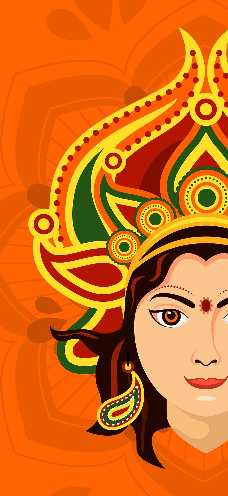

Dance4u
Navratri 2023
Day 6
Dandiya Design Competition


The Dandiya Design Competition can be a fun and engaging way to celebrate Navratri, where you can plan
for designing dandiya. Employees can participate in designing their dandiya sticks with traditional and
creative elements before the dandiya night at the office premises.
Arranging a fun competition encourages the artistic expression of employees. Colleagues come together to
support and judge the designs. Awarding winners and participants brings another level of excitement to
Employees minds.
Besides work, they love celebrating the cultural significance of dandiya and Garba dances during
Navratri. It is a unique way to infuse the workplace with the festive spirit. This type of celebration
promotes teamwork and creativity among employees during Navratri celebrations.